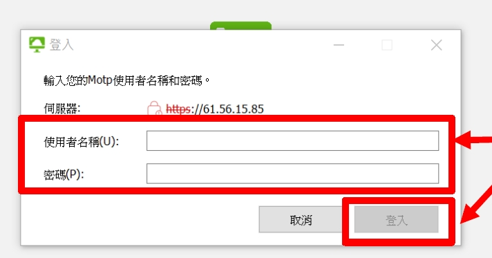

登入
登入
 請輸入正確密碼
請輸入正確密碼
 忘記密碼
忘記密碼


 首頁
首頁
 管理
管理
 導覽
導覽
 登入
登入
 共享資源
共享資源
共享資源
本局員工居家辦公刷卡服務使用說明
使用情境
本系統為供中央氣象局職員（包括職員、約聘僱及計畫人員）於居家辦公時，上、下班刷卡使用。
前置準備
使用本刷卡服務，須具備：
- MOTP 帳號
- 資訊中心 AD 帳號
- 個人 PC 或 NB 安裝「 VMware Horizon Client 」程式
請至行政資訊服務網 ▶ 下載專區 ▶ 各單位文件 ▶ 資訊中心 ▶ 下載「 VDI 與MOTP 使用說明」
- P.13 MOTP 帳號申請（資訊中心網管課）、 AD 帳號申請（資訊中心系統課）
- P.14 至 P.16 Horizon 程式安裝及連線教學
AD 帳號申請完成後：
1.
請登入行政資訊網，點選應用系統連結中之「個人資訊設定」。
2.
點選修改，輸入要使用之 AD 帳號後，按儲存存檔。
居家辦公刷卡服務操作說明
步驟 1 - 登入 MOTP
於電腦上開啟 VMWare Horizon Client 軟體
步驟 2 - 輸入 MOTP 認證資訊 登入
輸入 AD 帳號、密碼（ 6 位數字）後按下「登入」
步驟 3 - 輸入 AD 密碼登入
輸入 AD 密碼並登入
步驟 4 - 點選畫面中居家 辦公刷卡服務
步驟 5 - 輸入 AD 帳號及密碼後登入
出現此畫面時，請輸入 AD 帳號及密碼，按「確定」。
步驟 6 - 完成刷卡上／下班作業
 手冊下載
手冊下載
若遇到下圖狀況，為系統使用自簽憑證之警告訊息，按「確定」繼續即可。
 手冊下載
手冊下載
手冊下載
若遇到上述問題，敬請聯繫資訊中心 網管課鍾子健先生(分機1293)協助處理。
 手冊下載
手冊下載
手冊下載